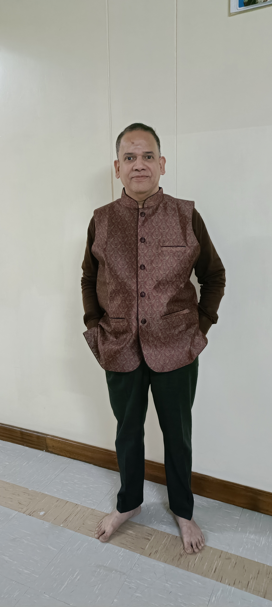

ENTERPRISE TRANSFORMATION LEADER
Turning enterprise IT from cost centre into growth engine
I partner with leadership teams to align technology investments with measurable business outcomes — practical pilots, clear KPIs and governance that prevents rework.
VVI

Quick facts
- 35+ years · ERP · WMS · RFID
- Practical pilots · Fast payback